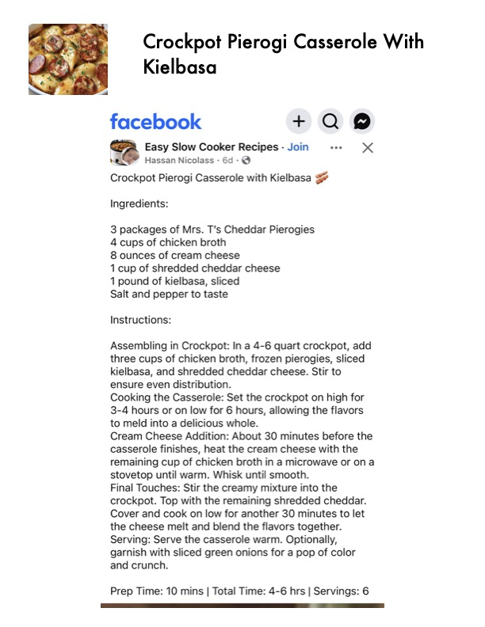

Crockpot Pierogi Casserole With

Original cookbook page 691
Ingredients
- 3 packages of Mrs. T's Cheddar Pierogies
- 4 cups of chicken broth
- 8 ounces of cream cheese
- 1 cup of shredded cheddar cheese
- 1 pound of kielbasa, sliced
- Salt and pepper to taste
Instructions
- % Easy Slow Cooker Recipes - Join eee xX Nes
- Assembling in Crockpot: In a 4-6 quart crockpot, add three cups of chicken broth, frozen pierogies, sliced kielbasa, and shredded cheddar cheese.
- Stir to ensure even distribution.
- Cooking the Casserole: Set the crockpot on high for 3-4 hours or on low for 6 hours, allowing the flavors to meld into a delicious whole.
- Cream Cheese Addition: About 30 minutes before the casserole finishes, heat the cream cheese with the remaining cup of chicken broth in a microwave or ona stovetop until warm.
- Whisk until smooth.
- Final Touches: Stir the creamy mixture into the crockpot.
- Cover and cook on low for another 30 minutes to let the cheese melt and blend the flavors together.
- Serving: Serve the casserole warm.
- Optionally, garnish with sliced green onions for a pop of color and crunch.
Recipe #691 from collection